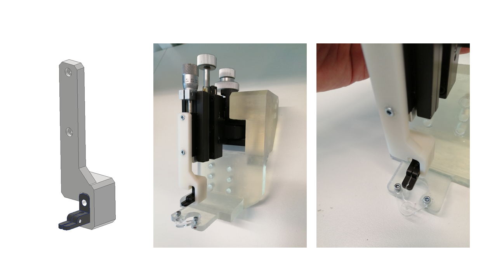

Experiments
The head holding system has been designed to be used in imaging and electrophysiology experiments. The observation of neurons through the implanted cranial window on the head of the rodent during rotation requires an independent system to align the axis of the motor rotation with the microscope field of view.
 |
|---|
 |
| :--: |
| Figure 1. Displacement of the cells due to the animal’s head rotation |
For these reasons a head fixation post with three degrees of freedom was designed to get to center the animal's head and to adjust the height depending on the animal’s height.
 |
|---|
| Figure 2. Readjustment of this center of rotation |
This head holding system is based on the assembly of 3 Thorlabs® translational stage MT1\M to get the three translational movements with reliability.
The main goals of this design are:
-
Adjust the height from mouse to mouse,
-
Adjust the center of the microscope field of view or the recording probe with the center of rotation
-
Reliability and repeatability experiment after experiment. Also the MT405 side mounted actuator adapter.
The resolution of the system is 10 microns, and the range of each micrometer is 13 mm.
 |
|---|
| Figure 3. Virtual assembly of the head post designed using Solidworks® software (left) and real assembly (right). |
The materials needed for the assembly are: the 2 3D printable parts, the three MT1\M translational stages, three MT405 side mounted actuator adapter, two M2.5 Nuts, two hexagonal M2.5 screws, fifteen M6 screws (two of them optional) and two Bollhoff M6 threaded inserts (also optional).
 |
|---|
| Figure 4. Drawings of the link 1:2 scale |
The 3D printed parts have been printed using a Form2 SLS 3D printer from Formlabs® using the standard features with Clear V4 resin type.## Bill of materials
 |
|---|
| Figure 5. Thorlabs® components needed: MT1\M translational stage (left) and MT405 side mounted actuator adapter (right) |
Optic fiber holder for optogenetics
For optogenetic stimulation, the optic fiber can be secured to the micro-manipulator using the Thorlabs FCM13/M and a custom 3d printed adaptor. This allows the positioning of the light source at any desired location in the cranial window area.
|  |
|---|
| Figure 6. Optical fiber holder |
Bill of materials
| Component | Manufacturer | Units | Reference |
|---|---|---|---|
| Link Link MT1/M | 3D printed part | 1 | STP file, STL files |
| Head plate | 3D printed part | 1 | STP file, STL file |
| Neuronexus holder | 3D printed part | 1 | STP file |
| Optic fiber holder | 3D printed part | 1 | STP file, STL file |
| MT1/M translational stage | Thorlabs | 3 | MT1/M |
| MT405 side mounted actuator adapter | Thorlabs | 3 | MT405 |
| M6 hex bold screws 16mm length | RS components | 15 (2 optional) | 281-144 |
| M2.5 hex bold screws | RS components | 4 | 483-8124 |
| M2.5 nuts | RS components | 2 | 560-287 |
| M6 threaded inserts | RS components | 2 (optional) | 664-7359 |
| M4 screws | 3 | ||
| M3 screws | 2 | ||
| Left handed micromanipulator MM33 | Sutter | 1 | MM33 |
The scales for all axes are calibrated in 0.10mm increments and the fine micrometer adjustment for the X-axis thrust is calibrated at 0.01mm with estimates to 5μm. X-axis coarse movement: 37 mm X-axis fine movement: 10 mm Y-axis horizontal movement: 20 mm Z-axis vertical movement: 20 mm